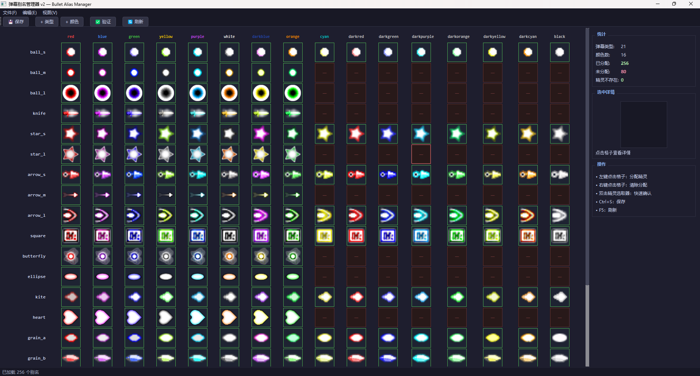

pystg 编辑器工具指南¶
本文档介绍 pystg 附带的三个可视化编辑器工具的安装、启动和使用方法。
目录¶
1. 概览¶
pystg 提供三个 PyQt5 可视化编辑器，用于管理游戏资产配置：
| 工具 | 文件 | 用途 |
|---|---|---|
| 弹幕别名管理器 | tools/bullet_alias_manager.py |
管理弹幕类型+颜色→精灵的映射 |
| 纹理资产编辑器 | tools/asset_manager_qt.py |
编辑精灵图集裁切区域、动画帧、激光配置 |
| 自机编辑器 | tools/player_editor.py |
编辑自机动画、射击类型、子机配置 |
此外还有一个统一启动器（tools/editor_launcher.py），可以从一个窗口打开以上所有编辑器。
所有编辑器共享统一暗色主题（Catppuccin Mocha），公共代码位于 tools/editor_common.py。
文件结构¶
tools/
├── editor_launcher.py # 统一启动器
├── editor_common.py # 共享模块（主题、缓存、数据加载）
├── bullet_alias_manager.py # 弹幕别名管理器
├── asset_manager_qt.py # 纹理资产编辑器
└── player_editor.py # 自机编辑器
2. 依赖安装¶
所有编辑器都需要 PyQt5：
pip install PyQt5
纹理资产编辑器还依赖引擎模块（src/resource/unified_texture.py），无需额外安装但需要确保项目目录完整。
3. 统一启动器¶
启动¶
python tools/editor_launcher.py
功能¶
启动器提供三个工具卡片，点击即可启动对应编辑器：
- 🎯 弹幕别名 — 打开弹幕别名管理器
- 🖼️ 纹理编辑 — 打开纹理资产编辑器
- ✈️ 自机编辑 — 打开自机编辑器
每个编辑器在独立进程中运行，关闭启动器不会影响已打开的编辑器。
直接启动
你也可以跳过启动器，直接运行各编辑器的 Python 脚本。
4. 弹幕别名管理器¶
启动¶
python tools/bullet_alias_manager.py
是什么？¶
弹幕别名管理器用来建立弹幕类型 + 颜色 → 精灵名称的映射关系。
在 pystg 的关卡脚本中，发射弹幕时使用的是抽象名称：
# 关卡脚本中的弹幕发射
ctx.spawn_bullet(x, y, speed, angle, bullet_type="ball_m", color="red")
引擎需要知道 ball_m + red 对应哪个具体的精灵图（如 ball_mid1）。
这个映射关系存储在 assets/bullet_aliases.json 中，由本工具管理。
界面布局¶

格子状态¶
网格中每个格子（SpriteCell）代表一个 (弹幕类型, 颜色) 组合，有三种状态：
| 状态 | 边框颜色 | 含义 |
|---|---|---|
| 🟢 绿色 | 已分配，对应精灵存在 | 正常工作 |
| 🟡 黄色 | 已分配，但精灵找不到（显示⚠） | 配置了名称但图集中没有这个精灵 |
| 🔴 红色 | 未分配（显示—） | 还没有映射，需要手动设置 |
基本操作¶
分配精灵¶
- 左键点击任意格子 → 弹出精灵选取器
- 在选取器中可以：
- 使用搜索框按名称过滤
- 使用下拉框按图集过滤
- 浏览缩略图网格
- 双击缩略图 → 快速确认选择
- 或者先单击选中，再点"确定"
清除分配¶
- 右键点击格子 → 弹出菜单 → "清除此格子"
添加弹幕类型¶
- 工具栏 "添加类型" → 输入新的别名（如
my_bullet） - 新类型会出现在网格最后一行，所有颜色初始为未分配
添加颜色¶
- 工具栏 "添加颜色" → 输入新颜色名（如
pink） - 新颜色会添加为网格的新列
删除弹幕类型 / 颜色¶
- 菜单 "编辑" → "删除弹幕类型..." / "删除颜色..."
- 选择要删除的项目后确认
验证¶
- 工具栏 "验证" 或菜单 "编辑" → "验证所有"
- 检查所有已分配的精灵名是否在图集中存在
- 结果显示在弹窗中
保存¶
- 工具栏 💾 / 菜单 "文件" → "保存" /
Ctrl+S - 保存到
assets/bullet_aliases.json - 关闭窗口时如有未保存修改会提示
精灵选取器¶
弹出的精灵选取器提供所有可用精灵的可视化浏览：
┌─ 选择精灵 ──────────────────────────┐
│ │
│ 🔍 [搜索框: ball_mid ] │
│ 📁 [图集过滤: 全部 ▼ ] │
│ │
│ ┌────┬────┬────┬────┬────┬... │
│ │spr1│spr2│spr3│spr4│spr5│... │
│ ├────┼────┼────┼────┼────┤ │
│ │spr6│spr7│spr8│spr9│ ...│ │
│ └────┴────┴────┴────┴────┘ │
│ │
│ [ 确定 ] [ 取消 ] │
└──────────────────────────────────────┘
- 每行 10 个缩略图（64×64 像素）
- 鼠标悬停显示精灵名称和所属图集
- 已在当前格子中选中的精灵会高亮标记
输出文件格式¶
保存的 assets/bullet_aliases.json 格式如下：
{
"version": "1.0",
"mapping": {
"ball_m": {
"red": "ball_mid1",
"blue": "ball_mid2",
"green": "ball_mid3",
"purple": "ball_mid4",
"orange": "ball_mid5",
"darkblue": "ball_mid6",
"white": "ball_mid7",
"yellow": "ball_mid8"
},
"ball_s": {
"red": "ball_small1",
"darkred": "ball_small2",
"blue": "ball_small3",
...
}
}
}
与引擎的关系¶
引擎的 StageContext（位于 src/game/stage/context.py）在首次实例化时自动加载此文件：
class StageContext:
BULLET_ALIAS_TABLE: Dict[str, Dict[str, str]] = {}
@classmethod
def load_bullet_aliases(cls, path="assets/bullet_aliases.json"):
# 读取 JSON 并填充 BULLET_ALIAS_TABLE
...
def _resolve_sprite_id(self, bullet_type: str, color: str) -> str:
# 1. 优先查 BULLET_ALIAS_TABLE
type_entry = self.BULLET_ALIAS_TABLE.get(bullet_type)
if type_entry:
sprite = type_entry.get(color)
if sprite:
return sprite
# 2. 回退到旧的 BULLET_TYPE_MAP + COLOR_MAP
...
兼容性
即使 bullet_aliases.json 不存在，引擎也会回退到内置的 BULLET_TYPE_MAP / COLOR_MAP 硬编码映射。
新增的弹幕类型（如 arrow_s, grain_a, kite 等）只能通过 JSON 别名表使用。
为什么不同类型的颜色数不同？¶
不同弹幕使用不同数量的精灵变体（ 沿用LuaSTG 规范）：
- 8 色类型（如
ball_m,knife,star_l）：red, blue, green, purple, orange, darkblue, white, yellow - 16 色类型（如
ball_s,star_s,square,grain_*）：在 8 色基础上增加 darkred, darkblue, darkgreen, darkpurple, darkorange, darkyellow, cyan, darkcyan, black
后缀编号（如 ball_mid1, ball_mid2...）在不同类型中不一定对应相同颜色，所以需要这个工具来逐类型管理映射。
5. 纹理资产编辑器¶
启动¶
python tools/asset_manager_qt.py
功能概述¶
纹理资产编辑器直接集成游戏引擎的 UnifiedTextureManager，可以编辑所有类型的精灵资产。
支持的资产类型¶
| 类别 | 路径 | 说明 |
|---|---|---|
| 子弹 | assets/images/bullet/ |
子弹精灵图集 |
| 激光 | assets/images/laser/ |
激光纹理（head/body/tail 三段式） |
| 玩家 | assets/images/player/ |
自机精灵 |
| 敌人 | assets/images/enemy/ |
敌机精灵 |
| 道具 | assets/images/item/ |
道具精灵 |
| 背景 | assets/images/background/ |
关卡背景 |
| UI | assets/images/ui/ |
界面元素 |
主要功能¶
- 精灵裁切编辑：在纹理图集上可视化选取精灵区域（rect）
- 中心点配置：设定精灵旋转/渲染中心点
- 碰撞半径：配置碰撞检测的圆形半径
- 动画帧编辑：管理序列帧动画
- 激光三段预览：head / body / tail 三段式激光的可视化预览
- 16 色变体组管理：管理弹幕颜色变体组
- 实时预览：所有修改即时显示效果
数据存储¶
每个图集目录下的 JSON 文件（如 assets/images/bullet/bullet1.json）存储精灵定义：
{
"__image_filename": "bullet1.png",
"sprites": {
"ball_mid1": {
"rect": [0, 0, 32, 32],
"center": [16, 16],
"radius": 8,
"rotate": false
},
...
}
}
修改立即生效
纹理编辑器的保存直接写入引擎使用的 JSON 配置文件，修改后重启游戏即可看到效果。
6. 自机编辑器¶
启动¶
python tools/player_editor.py
功能概述¶
自机编辑器用于配置玩家角色的各项属性。
主要功能¶
- 动画状态机：编辑空闲 / 左移 / 右移 / 特殊动画状态及切换规则
- 精灵帧预览：实时预览动画帧序列
- 射击类型：配置主武器和副武器的弹幕发射参数
- 子机（Option）配置：设定子机位置、动画、攻击行为
- 移动参数：常速 / 低速移动速度配置
数据存储¶
自机配置位于 assets/players/<角色名>/config.json：
assets/players/
├── reimu/
│ ├── config.json # 角色配置（动画、射击、子机等）
│ └── reimu.png # 角色精灵图
└── sakuya/
├── config.json
└── sakuya.png
7. 共享模块说明¶
tools/editor_common.py 提供以下共用功能：
路径常量¶
PROJECT_ROOT # 项目根目录
ASSET_ROOT # assets/ 目录
BULLET_IMAGE_DIR # assets/images/bullet/ 目录
BULLET_ALIASES_PATH # assets/bullet_aliases.json 路径
PLAYERS_ROOT # assets/players/ 目录
统一暗色主题¶
from tools.editor_common import DARK_THEME, apply_dark_theme
# 方式1：直接设置 stylesheet
widget.setStyleSheet(DARK_THEME)
# 方式2：使用辅助函数
apply_dark_theme(widget)
主题基于 Catppuccin Mocha 配色方案，覆盖了 QMainWindow、QDialog、QMenu、QPushButton、QTableWidget、QTreeWidget、QLineEdit、QComboBox、QScrollBar 等常用控件。
精灵数据加载¶
from tools.editor_common import (
SpriteEntry,
load_all_bullet_sprites,
get_all_sprite_names,
get_sprite_entry_map,
)
# 加载所有子弹图集
atlases = load_all_bullet_sprites()
# atlases = {"bullet1": [SpriteEntry(...), ...], "bullet2": [...]}
# 获取所有精灵名（集合）
all_names = get_all_sprite_names(atlases)
# 获取 name→entry 映射
entries = get_sprite_entry_map(atlases)
SpriteEntry 数据类：
@dataclass
class SpriteEntry:
name: str # 精灵名称，如 "ball_mid1"
atlas: str # 所属图集名，如 "bullet1"
texture_path: str # 纹理 PNG 完整路径
rect: (int,int,int,int) # 裁切区域 (x, y, w, h)
center: (float, float) # 中心点偏移
radius: float # 碰撞半径
rotate: bool # 是否旋转
QPixmap 缓存¶
from tools.editor_common import PixmapCache
# 预加载所有精灵（建议在 QApplication 创建后调用）
PixmapCache.ensure_all_loaded(atlases)
# 获取精灵的 QPixmap
pixmap = PixmapCache.get_sprite(sprite_entry)
# 按名称获取（需先加载）
pixmap = PixmapCache.get_sprite_by_name("ball_mid1")
# 创建占位符
placeholder = PixmapCache.make_placeholder(size=32, text="?")
别名 JSON 读写¶
from tools.editor_common import (
load_bullet_aliases,
save_bullet_aliases,
generate_default_aliases,
)
# 读取
mapping = load_bullet_aliases()
# mapping = {"ball_m": {"red": "ball_mid1", ...}, ...}
# 自动生成初始映射
atlases = load_all_bullet_sprites()
mapping = generate_default_aliases(atlases)
# 保存
save_bullet_aliases(mapping)
8. 常见问题¶
启动报错 ModuleNotFoundError: No module named 'PyQt5'¶
安装 PyQt5：
pip install PyQt5
弹幕别名管理器打开后网格是空的¶
可能原因：
assets/bullet_aliases.json不存在 — 工具会自动根据实际精灵生成默认映射assets/images/bullet/目录下没有 JSON 配置或 PNG 图片- 确保从项目根目录启动，或使用绝对路径
保存后游戏没有生效¶
引擎在 StageContext 首次实例化时加载别名表。确认：
- 关卡脚本里使用的
bullet_type和color名称与 JSON 中一致 - 重新启动游戏（别名表在进程启动时加载，不会热重载）
纹理编辑器加载失败¶
纹理编辑器依赖引擎的 UnifiedTextureManager。确保 src/resource/unified_texture.py 存在且没有语法错误。
如何添加全新的弹幕类型？¶
- 在纹理编辑器中为新精灵图集添加裁切定义
- 在弹幕别名管理器中点击 "添加类型"，输入新的别名
- 逐颜色点击格子，在精灵选取器中选择对应精灵
- 保存 → 在关卡脚本中即可使用新类型名
如何扩展编辑器？¶
如果需要创建新的编辑器工具：
- 在
tools/下创建新的.py文件 - 导入
editor_common使用共享主题和工具函数 - 在
editor_launcher.py中添加一张新的ToolCard
from tools.editor_common import DARK_THEME, apply_dark_theme, PROJECT_ROOT
class MyEditor(QMainWindow):
def __init__(self):
super().__init__()
apply_dark_theme(self)
...